Notre Top 16 des meilleurs Footballeurs 2021
Bonjour, bienvenue sur notre site web qui vous donne accès à nôtre classement des 16 meilleurs joueurs de football du monde.
Nous les avons classés par ordre croissant selon leur niveau.
Avant de regarder nôtre classement, écoutez l'hymne le plus fabuleux du football.
16.Gianluigi Donnarumma
Joueurs professionnel de football né le 25 février 1999 (22ans) actuellement il joue au paris saint-germain.
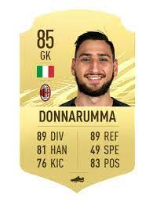
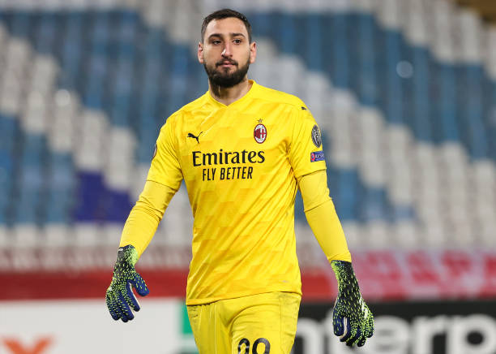
15.Paul pogba
Joueurs professionnel de football né le 15 mars 1993 (28ans) actuellement il joue a Manchester United.
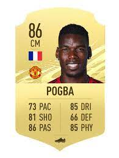
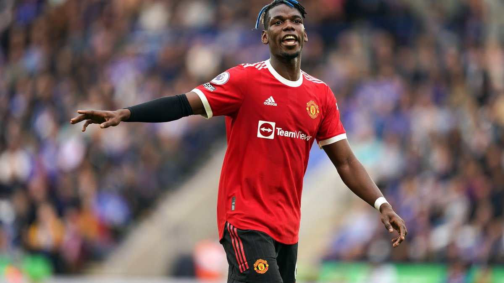
14.Marquinhos :
Joueur professionnel de football né le 14 mai 1994 (27ans) actuellement il joue au paris saint-germain. En 2021 il a gagné la coupe de France.
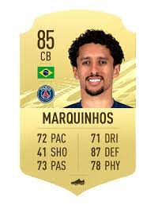
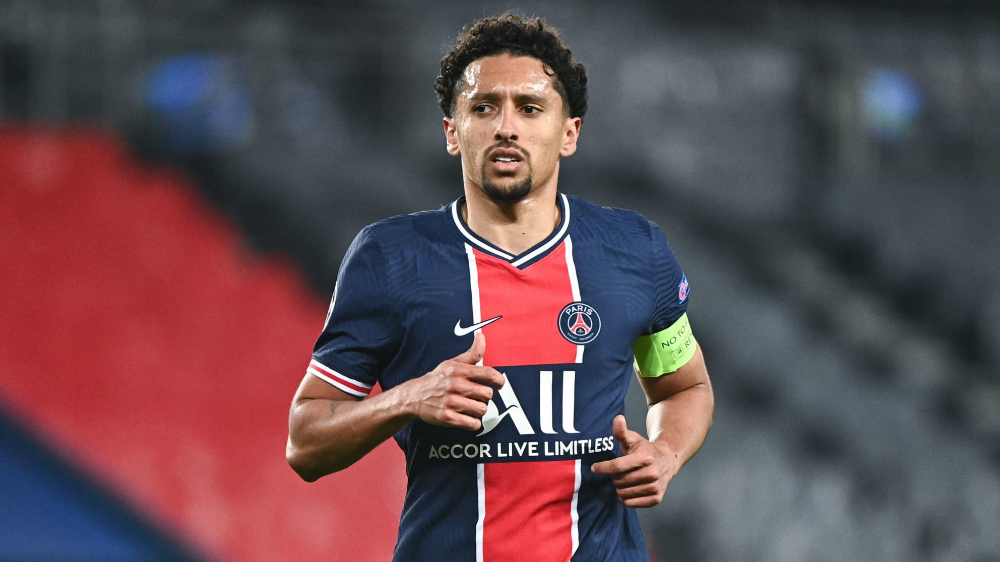
13.Kévin de Bruyne :
Joueur professionnel de football né le 28 juin 1991(30ans) actuellement il joue a Manchester city. En 2021 il a gagné la premier league.
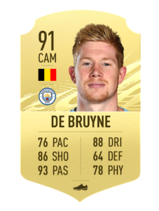
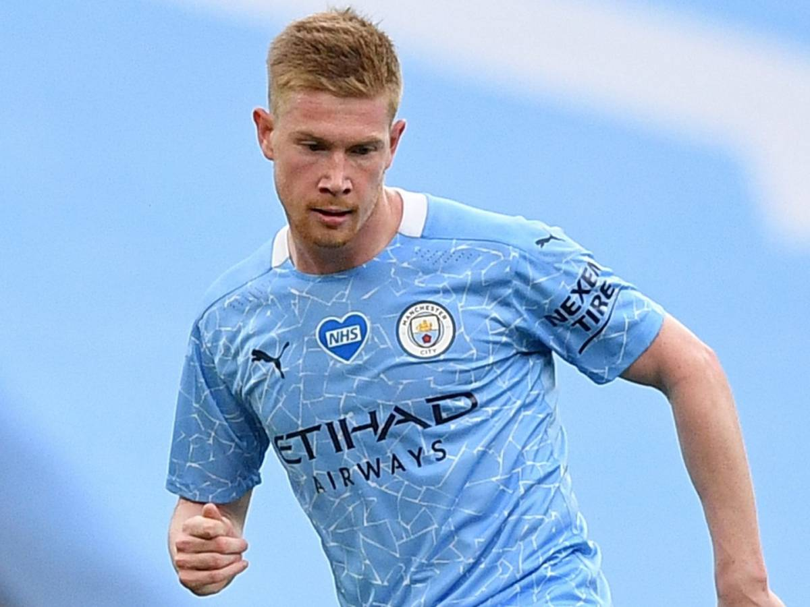
12.Hakim Ziyech :
Joueurs professionnel de football né le 19 mars 1993 (28 ans) actuellement il joue a Chelsea.
 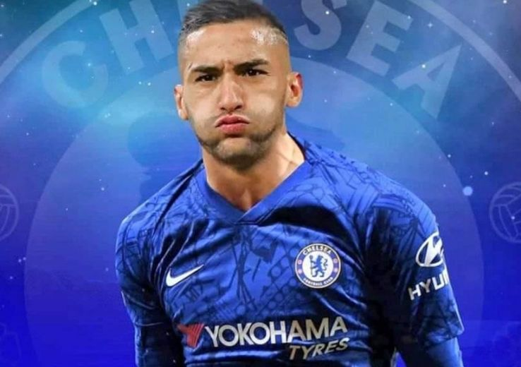
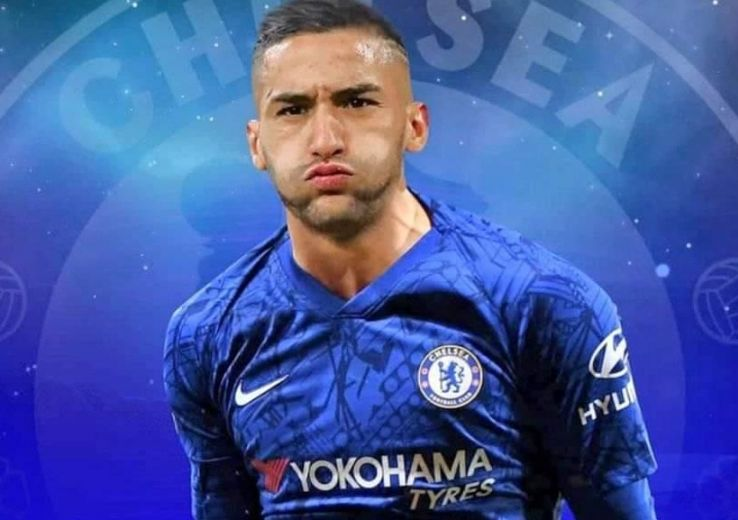
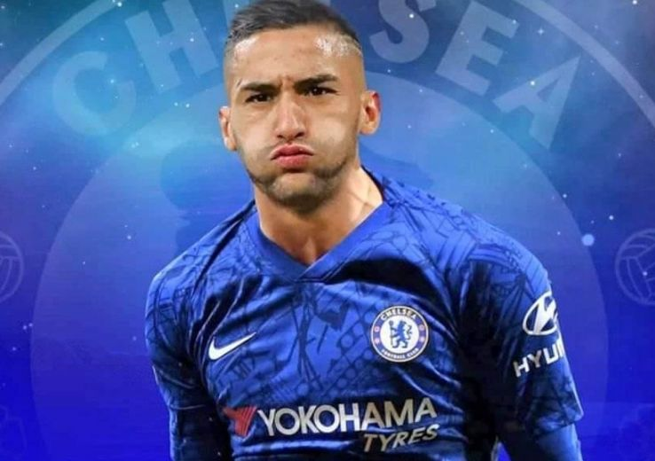
11. Achraf Hakimi
Joueurs professionnel de football né le 4 novembre 1998 (23 ans) actuellement il joue au paris saint-germain.
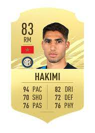
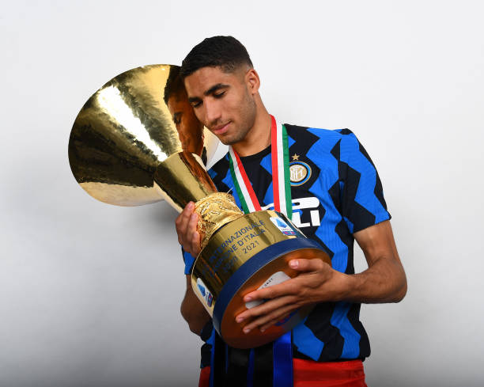
10.Riyad Mahrez :
Joueurs professionnel de football né le 21 février 1991 ( 30ans) actuellement il joue a Manchester city.
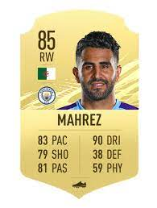
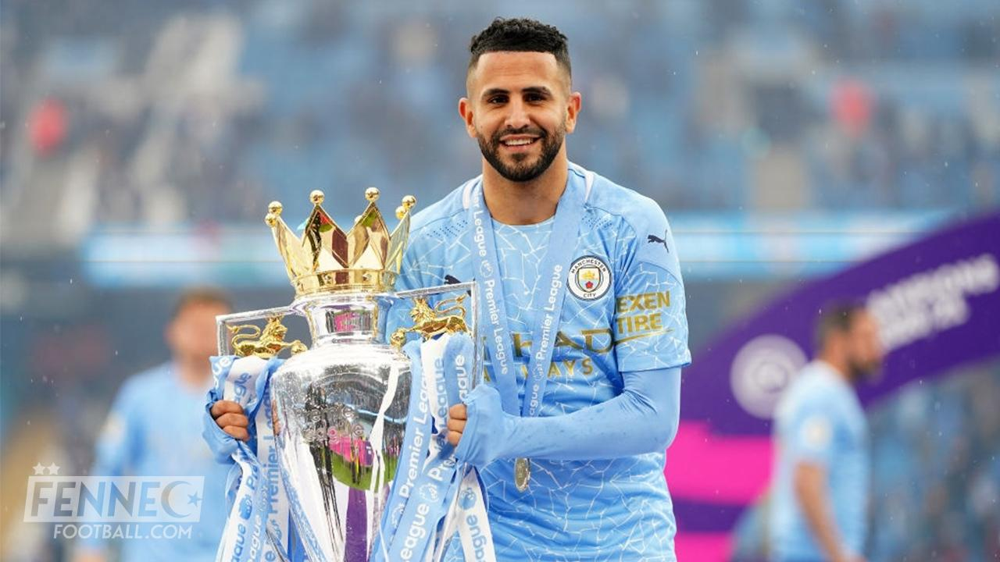
9.Bruno Fernandes ::
Joueurs professionnel de football né le 8 septembre 1994 (27ans) actuellement il joue a Manchester United.
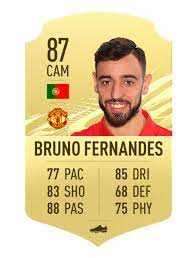
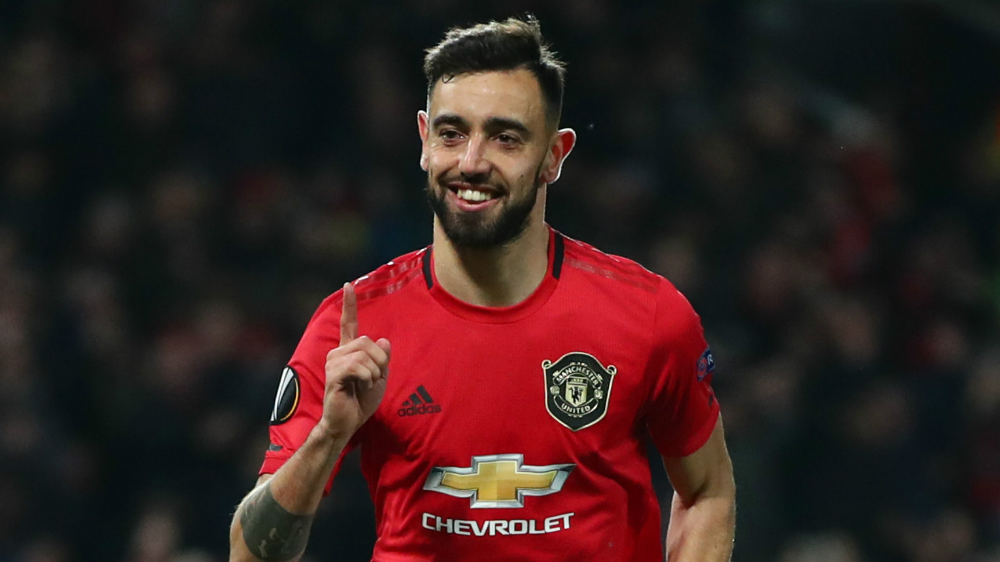